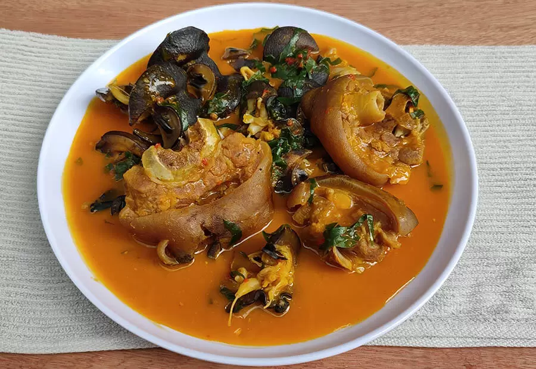

The Best Nigerian - Rivers's Soup Recipe

Rivers Native Soup is a gift from the people of Rivers State in the Niger
Delta Area of Nigeria.
These are the riverine people that use the freshest
seafood to prepare expensive soups and meals.
But you do not have to break
a bank to prepare this soup if you are not a fisherman.
You can cut down
on some of the ingredients but whatever you do, make sure you add clams
because it adds a lot of flavour to this soup.
Ingredients
- 1 kg Meat
- 1/2 cup Crayfish, Ground
- 2 Fish, Medium-size dry
- 2 cups Periwinkles
- 2 handfuls Prawns, fresh
- 10 pieces Stockfish
- 1 Cocoa yam as a thickener
- 1 Pepper
- 1 Salt
- 300 ml Palm oil
- 3 cubes Of maggi or knorr
- 1 cups Ngolo
- 2 Spoons of ofor (alternative thickener)
- 2 cups Sliced uziza leaves
Steps
Parboil your meat when its tender u add your stock fish and dry fish into the boiling pot
When its done you add water to the quantity of the soup you want and add your red oil and cover to boil
When the pot is boiling you add your thickener always check the soup thickness
Then you add ur crayfish, pepper, Maggi, perewinkle, and lastly your uziza leaf allow to boil for 5seconds. Your native soul is ready you can enjoy dis meal with semo